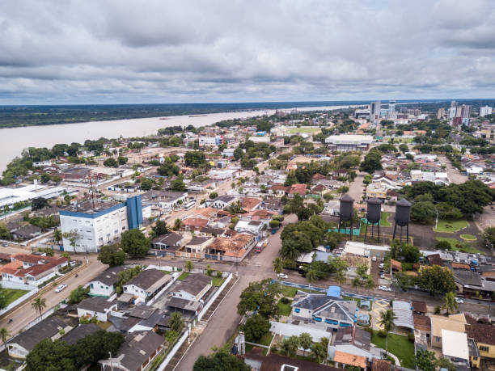

Rondônia é um estado localizado na região Norte do Brasil, fazendo fronteira com a Bolívia. É conhecido por sua grande extensão de florestas e pela importância na produção de commodities como soja, milho e carne bovina. A economia de Rondônia é bastante ligada à agropecuária e ao extrativismo, além de ter uma história marcada pelo desenvolvimento de áreas de colonização e desmatamento. A região também possui uma cultura diversificada, com influências indígenas, nordestinas e de outros povos que migraram para lá ao longo do tempo. Se quiser saber mais detalhes, estou aqui para ajudar!
